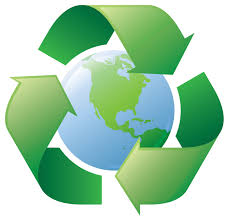

Use It Again
Author: Chase Colligan
Date Published: 2020-10-11
If it's not broken don't throw it away. That was the phrase that I heard quite often while growing up. My grandfather was a naturalist, which meant that nature conservation was drilled into my head from a young age. He would reuse anything and everything that he could. Mason jars were cups, boxes were used as flooring, and tennis balls were chair leg coverings. Everything that I thought was trash never was. Now I have moved into a new house with new roomates. These roomates evidently did not have a grandfather who was as passionate about conservation as mine was. They throw everything away and barely recycle. So this week I am going to do my best to push recycling, composting, and overall respect for the planet more on to my roomates. Because the planet needs help. There is a pandemic going around taking over the news sources, but it's not the only issue. Climate change is going to do more damage to the planet unless we decide to do something about it. Reusing simple household items is a good start, but it's not enough. The more everyone does to help support the planet, the better it will be. Overall it starts with one, so why can't the one be me. Let's clean up the planet and make everything safer for us!
